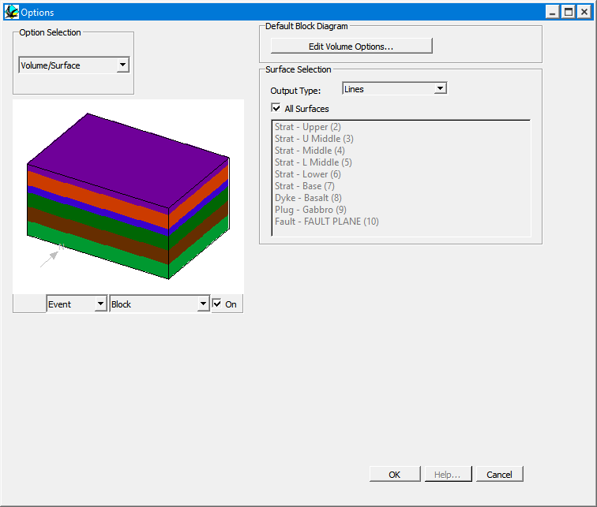

Volume / surface options
This window controls the appearence of 3D Triangulations and the default Block Diagram View.

| Surfaces Displayed | For 3D triangulation visualisations, this allows the selective calculation for individual stratigraphic layers and discontinuities (such as faults) to be performed. To select multiple surfaces, use alt-mouse click. | |
| All Surfaces | To select all layers, click in the All Surfaces check box | |
| Calculation Type | XYZ Colour | An XYZ Colour plot colours surfaces according to their position in space. |
| Shading | A Shading plot, uses a simulated Lambert shading on the surfaces. | |
| Lines | A Lines plot, colours the triangulation according to the layer colour, but leaves their interiors white. | |
| DXF 3dFace | A DXF 3d Face file saves the surfaces as a DXF file using 3Dface objects. | |
| DXF Polyline Face | A DXF Polyline Face file saves the surfaces as a DXF file using Polyline objects. | |
| Vulcan | A Vulcan file saves the surfaces as an ASCII file using that can be converted into native Vulcan triangulations via utility routines. | |
| Default Block Diagram | Controls the default view style for block diagrams, via the Block Diagram Options window |
Noddy · open source under the MIT licence · Loop3D/noddy_qt